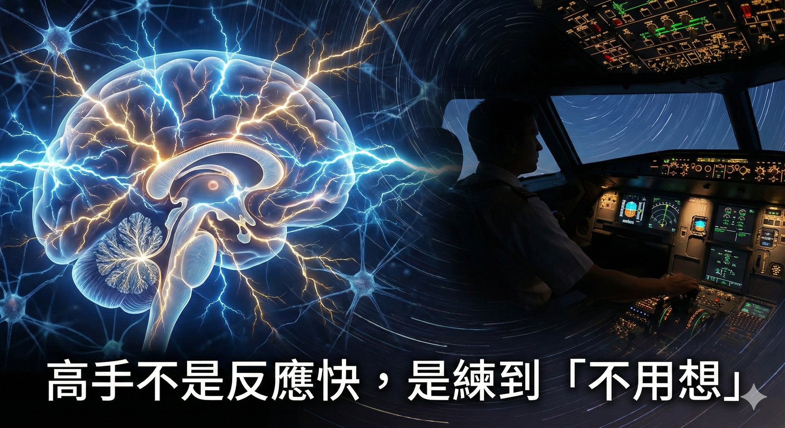

不是你不夠努力，而是在解一個，你根本不知道自己在解的問題。
這一年多，我回頭整理自己讀書與學習的路徑，從學習方法、商業、人性，一路鑽研到大腦科學與哲學。終於理解查理蒙格說的那句：「一本好書會為你帶來另外一本。」
你永遠不知道會連結到哪本書，但每天都在面對達克效應過後的興奮感，這就是純粹求知的樂趣吧！孔子說：「知之者不如好之者，好之者不如樂之者。」
但反觀現實，資訊對我們來說就像瀑布一樣永遠澎湃。現在的訊息泡泡、同溫層，每天滑的 IG、FB、Threads 都長得一樣：大長腿、小姐姐、跑車豪宅、八掛、鬥爭。
網路上似乎人均年收破千萬，每個顏值都像彭于晏、Angelababy。不只愈看愈焦慮，甚至愈看愈沒自信。
原來大家都活得這麼好？
這種比較跟嫉妒，造成了我們對於世界的誤解。其實這些只是每個人的「自我呈現」。大家私底下也都會挖鼻孔、也會放屁、也會有狼狽的時候。
如樊登所說的「學習的悖論」：你以為學習可以解決問題，但人生問題往往出在「你不知道你不知道」的盲區，所以你根本不知道從哪開始。
直到今天我終於懂了，人生的迷惘、焦慮、憂鬱，其實都來自於我們缺少了「人生三大訓練模型」。
第一：「定位模型」解決我是誰？
就像在沙漠裡，你連自己在哪都不知道，任何方向看起來都像希望，走起來卻都是錯路。
定位模型，就是你的人生導航。
你需要工具（如 DISC、霍金斯能量表等）來確認座標：
我的優勢在哪？我的性格適合什麼職業？我現在的能量高還是低？
方向對了，努力才有意義。沒有定位的努力，叫作瞎忙。
第二：「思維模型」解決怎麼想？
你有聽過「馬斯洛之槌」嗎？
如果你腦袋裡只有一種工具（槌子），你看到的世界，就只剩下一種問題（釘子）。
人跟人的差距，不在努力，而是你用幾種角度看事情。
遇到選擇困難 ➡ 用「經濟學」看機會成本遇到情緒勒索 ➡ 用「心理學」看阿德勒課題分離遇到複雜局勢 ➡ 用「博奕論」找最佳做法
思維對了，你就看見了別人看不見的捷徑
思維對了，你就不會再覺得人生綁手綁腳
第三：「大腦模型」解決怎麼做？
真正的高手，不是反應快，而是「練到不用想」。
《刻意練習》裡面談的心理表徵，就像機師遇見狀況時，能即時做出正確反應；就像銷售遇見客訴時，能即時說出安撫話語；就像喬丹永遠可以在最後一秒反敗為勝。
那不是天賦，是因為他們把專業「內化」成了本能。
這就是大腦可塑性，透過刻意練習的 3F 法則與批判性思維，讓大腦 860 億個神經元產生強連結。大腦模型的終極目標，是把「反直覺」的技能，練成「直覺」。
1+1+1 > 3 的威力
當定位、思維、大腦這三個模型開始互相作用，就會出現查理．蒙格說的 Lollapalooza 效應。
1 + 1 + 1 不等於 3，而是直接爆炸成 100。
人生最大的痛苦，往往不是日新月異的挑戰，而是「情景再現」——每天發生著一樣的事，又痛苦著一樣的事。
所以，人生真正要學的不是標準答案，而是「當問題出現時，你知道該去哪裡找答案」。
未來模糊，回到定位模型
綁手綁腳，檢查思維模型
做不出來，訓練大腦模型
迷惘時，回到定位模型決策時，檢查思維模型成長時，訓練大腦模型

這三個模型，你覺得自己目前最卡在哪一關？
留言「模型」，我整理好了三大模型的學習路徑送給你！
🎰三大模型點擊領取
「沒有地圖的奔跑叫流浪，擁有羅盤的慢走叫探索。」
🔧 你的業績卡住了嗎？因為我也走過那段「心累」的路，所以我懂你的痛。如果你想知道...你的「業務原廠設定」是適合開發還是穩定成長？你容易卡在「開發」、「開口」還是「成交」？👇 點擊連結加入 LINE私訊「想知道銷售天賦」，15分鐘幫你找到業務專屬天賦!https://line.me/ti/p/jzdho94spl
Instagram：eintaixin
個人官網